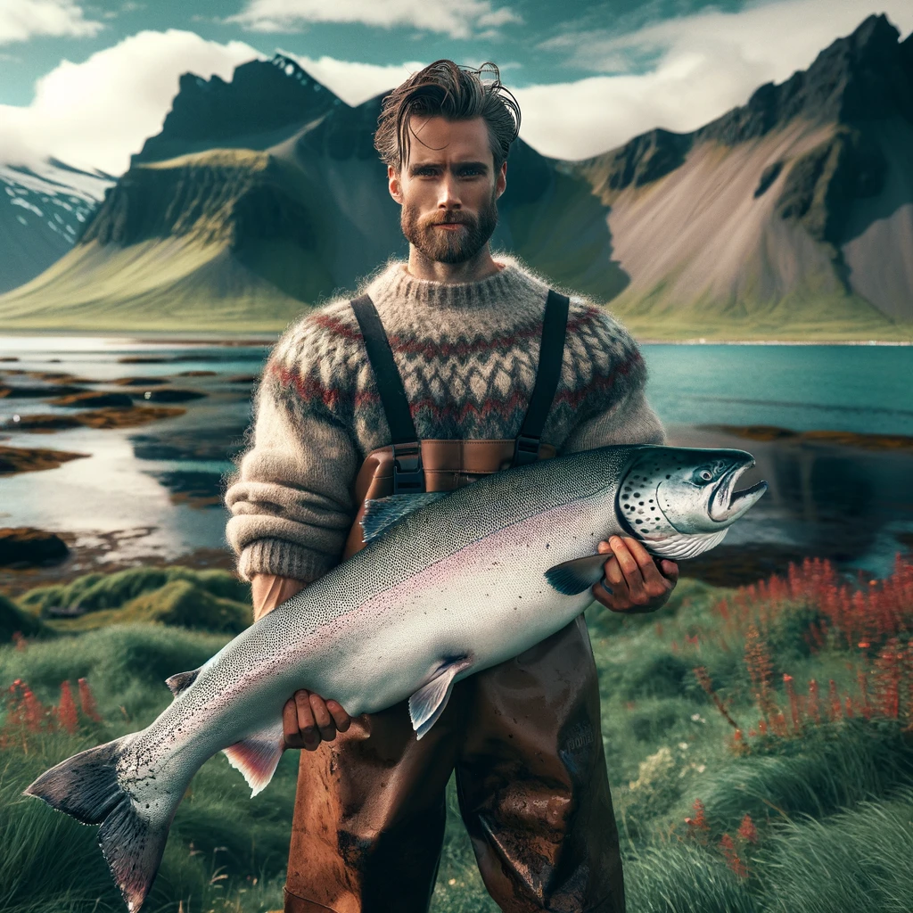

Our founder Daði Pálsson catching the first lax in vestmannaeyjar.
Laxey during the 1973 eruption in vestmannaeyjar
the incredible elephant rock as seen from our facilities

co-founder Viðar Sigurjónsson with the second lax found here
Welcome to Laxey
Leading the way in sustainable salmon farming.
About Us
Laxey is dedicated to providing the highest quality, sustainably farmed salmon to our customers worldwide.
Our Fish
Discover the journey of our salmon, from egg to your plate.
Sustainability
Learn about our commitment to sustainability and environmental stewardship in salmon farming.
Contact Us
Get in touch with Laxey for any inquiries.